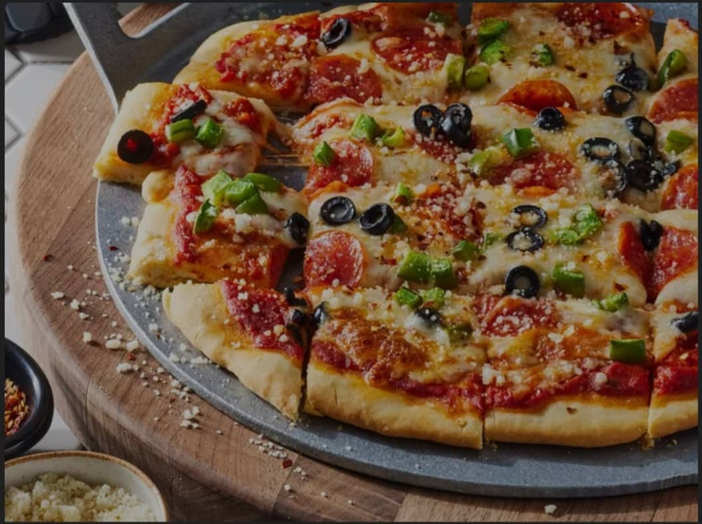

PIZZA RECIPES

DESCRIPTION
Crafted with a light and wholesome crust, this homemade pizza brings together all-purpose flour, baking powder, and a delicate balance of salt to form a tender base. Enriched with the subtle richness of olive oil and the smoothness of fat free milk, the dough bakes into a golden, flavorful foundation.
Versatile and inviting, it pairs beautifully with any selection of toppings, making it an elegant yet approachable recipe for both everyday meals and special occasions.
INGREDIENTS
- 1 ⅓ cups all-purpose flour
- 1 teaspoon baking powder
- ½ teaspoon salt
- ½ cup fat-free milk
- 2 tablespoons olive oil
STEPS
Step 1
- Gather all ingredients.
Step 2
- Mix flour, baking powder, and salt together in a bowl; stir in milk and olive oil until a soft dough forms.
Step 3
- Turn dough onto a lightly floured surface and knead 10 times. Shape dough into a ball; cover with an inverted bowl and let sit for 10 minutes. Meanwhile, preheat the oven to 400 degrees F (200 degrees C).
Step 4
- Roll dough into a 12-inch circle on a baking sheet.
Step 5
- Bake the crust in the preheated oven for 8 minutes.
h4> Step 6
- Add your favorite toppings and bake until the crust is golden brown, about 10 to 15 minutes more. Enjoy!
HOME